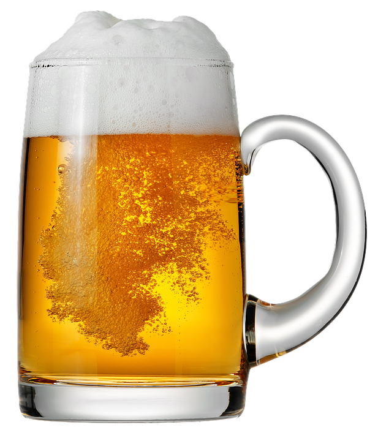

Feel like having a beer? BeerMe allows you to find the perfect beer based on your current mood. If you are having a bad day, then you can pick a stronger beer such as "End Of History". If you are in a good mood and don't need the world to end, then you can pick a lighter or near beer. The site even uses characters from The Office to help you decide what kind of mood you are in. BeerMe is guaranteed to determine your alcohol needs.